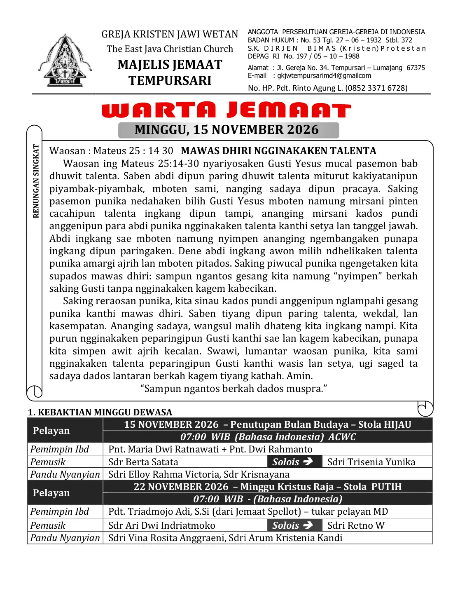

Arsip
1 terbitan tersimpan
November 2026
Tidak ada terbitan untuk pilihan ini. Ganti tahun atau jenisnya.
 Multimedia GKJW Tempursari
Multimedia GKJW Tempursari
Warta minggu ini
Minggu, 15 November 2026
Penutupan Bulan Budaya · stola hijau
“Mawas Dhiri Ngginakaken Talenta” — Mateus 25:14-30
Buka warta
1 terbitan tersimpan
Tidak ada terbitan untuk pilihan ini. Ganti tahun atau jenisnya.